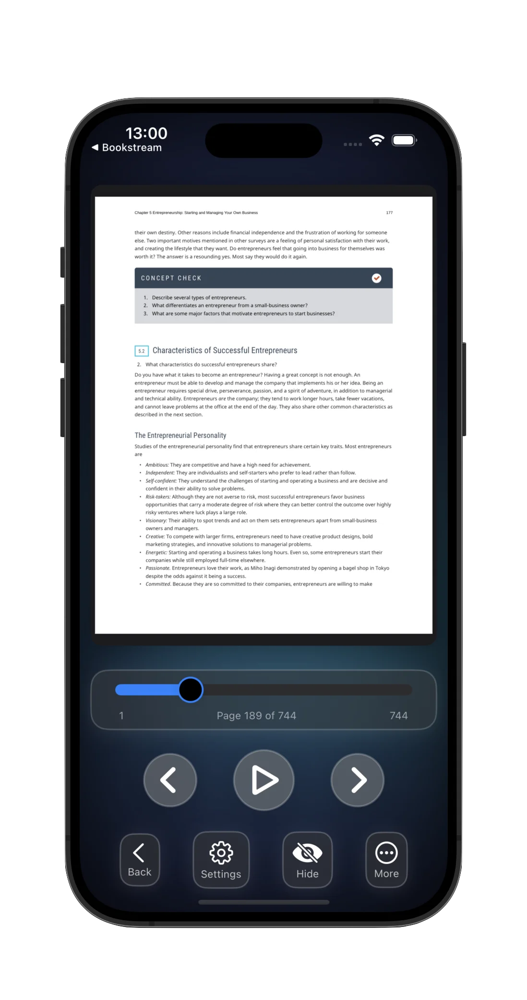

Listening, Your Way
Customizable playback, CarPlay support, and clear audio keep narration comfortable on every drive, walk, or focus session.
- • Customizable playback. Adjust speech rate and pitch.
- • CarPlay support. Distraction‑free listening on the road.
- • Clear audio. High‑quality, on-device voices.
